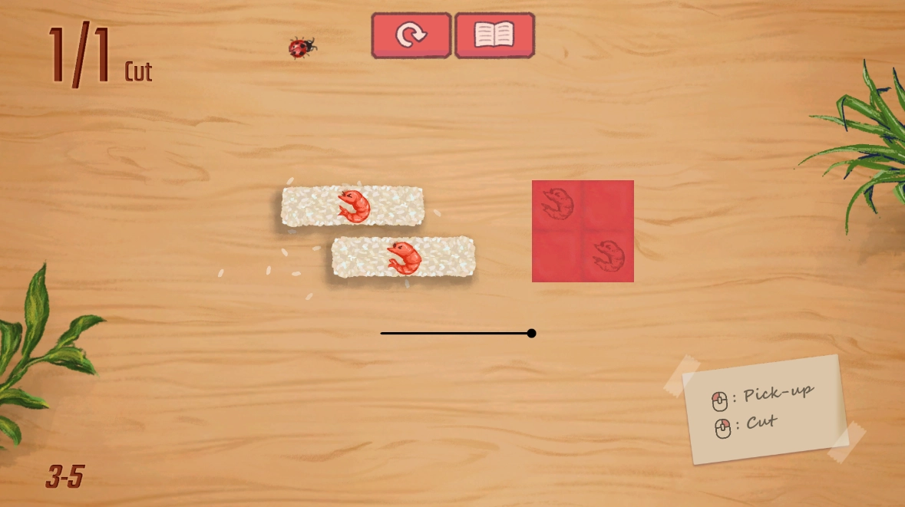
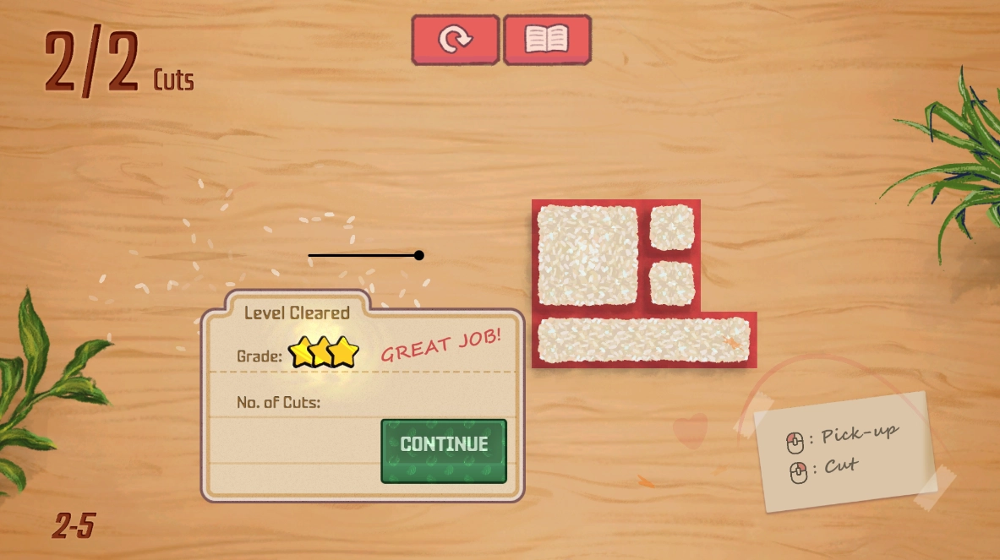
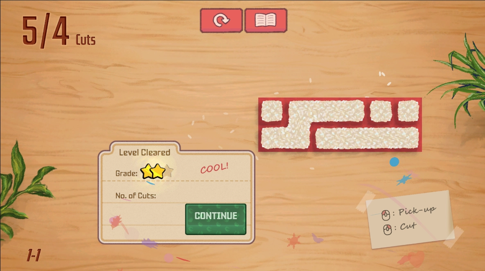
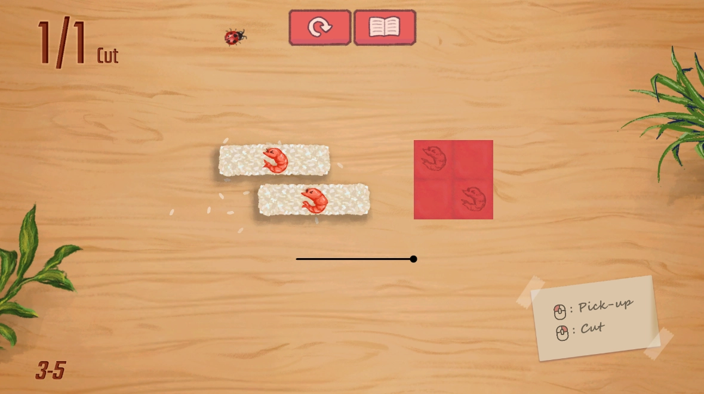
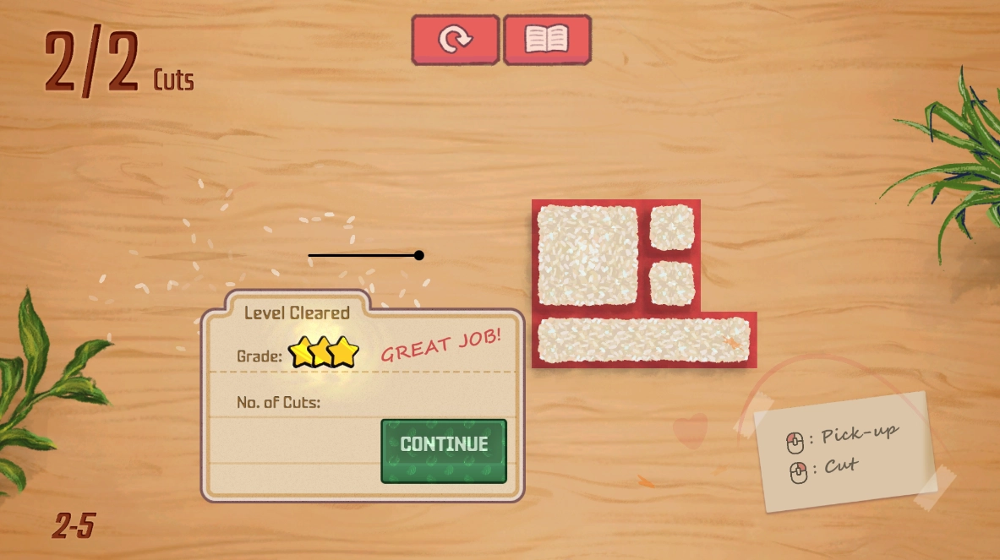
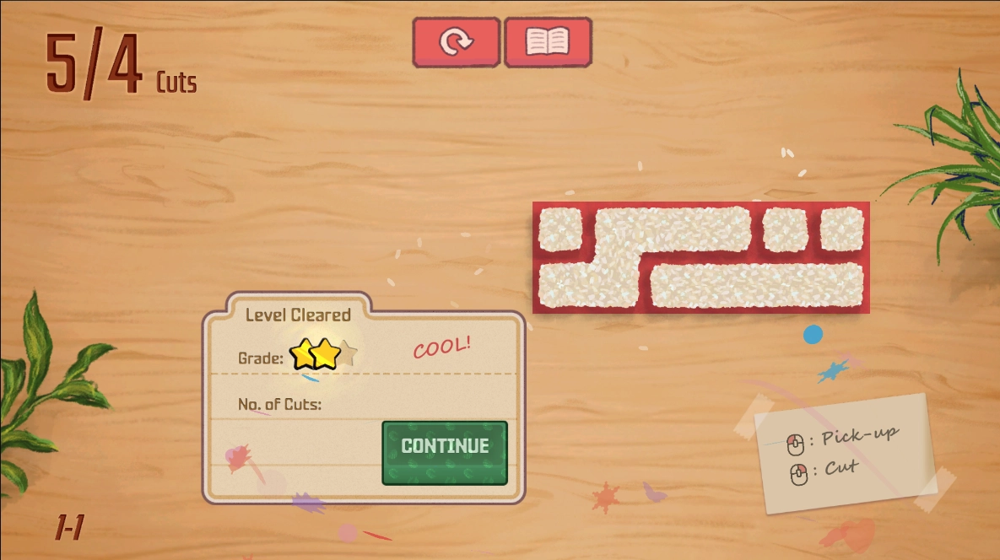

Bento Blocks is a puzzle game where the player uses knives to cut food coming some time early 2025
Development Notes
Early Prototype
Development of a prototype started in early july of 2023, initially I was thinking about a game where you cut big sheets of wood into sections to build furniture. I think that would have required 3d to work though and I really wanted to work on something simple. So instead wood block puzzles where you have to fit all the pieces in a box which I guess is basically tetris.

As the game transitioned into something more abstract,


Back from the dead?
In june of 2024 Andy, Sofia and I were looking for a new project to work on that we could actually finish a polished version of. The initial version of the game took less than a week to get working, with the experience from the previous prototype and enthusiam to get past the initial ideas into something that was actually finished. with a new cooking theme.


Playtesting
Proved that the foundations were solid,

Showing at gdc was supposed to be a test of the game on a more general audience while that wasn't exactly we still learnt alot about the types of platforms

Final

 




